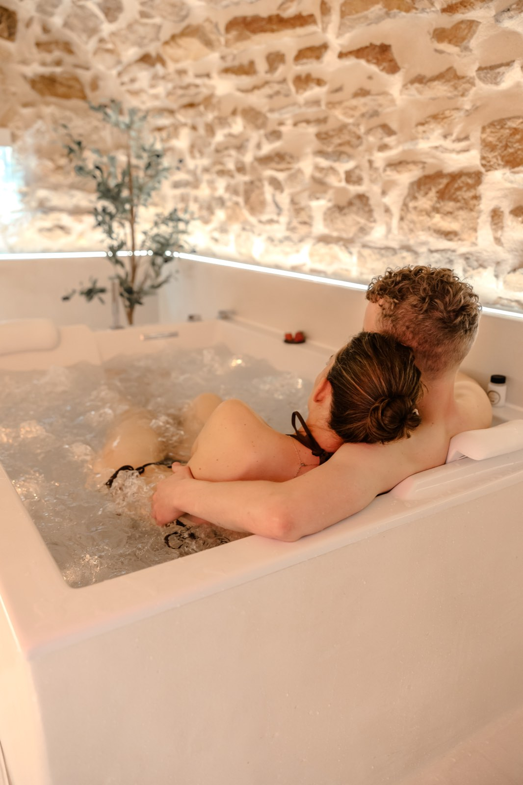

Se garer à Villefranche :
le guide sans tourner en rond
Le centre de Villefranche se parcourt très bien à pied — encore faut-il avoir posé la voiture. Horaires payants, créneaux gratuits, jours de marché : ce qu'il faut savoir avant d'arriver.

Villefranche a une géographie simple : une longue artère, la rue Nationale, et un maillage de rues adjacentes. Une fois garé, tout se fait à pied. Le seul vrai sujet, c'est donc les dix premières minutes.
Les horaires payants
Le stationnement en centre-ville est payant de 9h à 12h et de 14h à 18h. Deux conséquences très concrètes :
- La pause méridienne, de 12h à 14h, est gratuite. Un déjeuner en ville ne coûte rien en stationnement.
- Après 18h, tout est gratuit jusqu'au lendemain matin. Pour une soirée ou une nuit, la question ne se pose pas.
Les jours gratuits
Le stationnement est gratuit les dimanches et les jours fériés. C'est l'information qui fait la différence pour un week-end : arrivé le samedi après 18h et reparti le dimanche, vous ne paierez rien.
Où se garer concrètement
Les rues adjacentes
Le stationnement de surface dans les rues perpendiculaires à la rue Nationale est le plus simple. En s'éloignant de deux ou trois rues du centre, on trouve presque toujours une place, et la marche n'excède jamais cinq minutes.
La rue Nationale
Des places existent le long de l'artère principale, mais elles sont les plus disputées. Inutile d'insister aux heures de pointe : le temps perdu à chercher dépasse largement le temps de marche gagné.
Les jours à anticiper
- Les matins de marché — lundi, mercredi, vendredi, samedi et dimanche, de 8h à 12h. Le lundi matin est le plus dense.
- Fin janvier — les Conscrits et leur défilé rue Nationale ferment une partie du centre.
- Le week-end du Marathon du Beaujolais, en novembre — voir notre guide de l'édition 2026.
- Novembre, période du Beaujolais nouveau — affluence sensible en soirée.
Trois réflexes qui font gagner du temps
- Arriver après 18h quand c'est possible : gratuit et bien plus fluide.
- Se garer une fois pour toutes et tout faire à pied : le centre se traverse en un quart d'heure.
- Un jour de marché, viser franchement les rues périphériques plutôt que d'espérer une place près des halles.
Et si vous dormez en centre-ville
La Voûte des Sens se situe en plein cœur de Villefranche, à quelques minutes à pied de la rue Nationale. Le stationnement se fait dans les rues adjacentes ou rue Nationale, selon les horaires ci-dessus — et comme les arrivées se font à partir de 17h, la gratuité de 18h joue presque toujours en votre faveur.
Une fois la voiture posée, restaurants, bars, boulangeries et le marché couvert sont tous accessibles à pied. Voir les disponibilités.
Les modalités de stationnement peuvent évoluer : en cas de doute, la signalétique sur place et le site de la mairie font foi.
Questions fréquentes
Le stationnement est-il payant à Villefranche-sur-Saône ?
Oui, en centre-ville, de 9h à 12h et de 14h à 18h. Le stationnement est gratuit entre 12h et 14h, après 18h, ainsi que les dimanches et jours fériés.
Où se garer gratuitement à Villefranche-sur-Saône ?
Le stationnement est gratuit partout en centre-ville les dimanches et jours fériés, ainsi qu'entre 12h et 14h et après 18h en semaine. En dehors de ces créneaux, les rues périphériques offrent le meilleur compromis.
Faut-il une voiture pour visiter Villefranche ?
Non. Le centre se parcourt entièrement à pied : la rue Nationale, le marché couvert, les restaurants et les commerces sont regroupés. Une voiture reste utile pour rayonner dans le vignoble du Beaujolais.
Quels jours faut-il éviter pour se garer ?
Les matins de marché (lundi, mercredi, vendredi, samedi, dimanche de 8h à 12h), le week-end du Marathon du Beaujolais en novembre, et la période des Conscrits fin janvier.

La Voûte des Sens
Une voûte de pierre,
deux personnes.
Balnéo privative, douche sensorielle et pièce secrète, à Villefranche-sur-Saône, à 40 minutes de Lyon. 5,0/5 sur 20 commentaires.